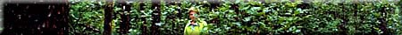

Field Trip to the Forest
1. Take a trip to the forest and complete your Field Trip Report
Sheets. You may use a subjective measuring system, such as word
descriptions. (e.g., wind strength is "moderate" in
the treed area, "strong" in the open area). Use all
the skills you have acquired to date to identify and measure trees.
When in the woods, walk slowly and observe the overall nature
of the woodlot. Depending on the Field Trip Report Sheet chosen, you will be recording such
things as the tree species; the condition, age, and distribution
of the trees; shrubs and ground cover; soil conditions; any animals,
such as birds and squirrels, that you notice; and/or environmental
factors at work.
2. Identify and mark out a suitable smaller study site (allow for about one square metre per pair of students) that can be used for closer observations. You may wish to work with someone else to work on the sample plot (or quadrat).
- Conduct a quantitative measurement of the vegetation in the
study area by recording each type of plant in the quadrat as abundant,
frequent, occasional, or rare.
- As you study the plants, collect insects or other invertebrates
in containers. Record on the container a description of the insect
and exactly where it was found. Make sure to include some plant
material from the insect's habitat. Insects can be found under
stones, logs, or leaf litter. Use a trowel if necessary, but be
sure to return everything to its original position after examining
it. The insect samples collected can be identified once back inside.
- Alternately, use a magnifying glass to observe insects and their natural habitat, sketching individuals and describing their actions.
3. If you have the equipment, measure such factors as temperature,
wind speed, amount of light penetration, soil moisture content,
and pH. Take each of these measurements at two or more different
locations.
The following are some suggestions for measuring soil temperature, moisture and pH.
- Soil Temperature
An adequate measure of soil temperature can be obtained with a
clinical thermometer but extra care has to be taken to get a good
reading. Place the bulb of the thermometer about 15 cm below the
surface to escape surface temperature influences. You will need
to use a probe to make a hole before inserting the thermometer.
Don't forget to shake the thermometer down beforehand and to allow
time for it to adjust properly.
- Soil Moisture
Soil moisture can be measured using relatively simple electronic
equipment, but most high school classes will find it easier to
measure soil moisture using a drying oven. Carefully weigh a fresh
soil sample. Dry it for 24 hours in an oven at low heat. The soil
moisture should then be zero. The difference in soil weights will
allow you to calculate the percentage of the soil moisture by
weight.
- Soil pH
Moisten a sample of soil with distilled water. Touch a piece of
litmus paper to the water that has washed off the soil. Match
the colour of the litmus paper to the key on the bottle to determine
the pH of the soil tested.
4. Look for and record signs of larger animals in the forest,
such as scat, tracks, dens, burrows or nests, feathers, bones,
and signs of feeding on trees or other plants. Note any signs
of human activity in the area, and try to determine if it has
had any impact on the woodlot.
5. Create tables and graphs to summarize the data recorded for both the biotic and abiotic parts of the ecosystem. Interpret this information by proposing relationships between sets of data. For example:
- How do the abiotic factors affect the vegetation?
- What relationships are there between plants and animals?
- Between plants and plants? Did the students discover any food chains?
- Can you predict (and support the predictions through graphing)
what would happen if any one of the biotic or abiotic factors
were to be removed from the forest environment?
- Use identification books to name specimens collected on the
field trip. Conduct observations and experiments on some of the
living invertebrates to discover, for example, their preferences
in food, light intensity, and moisture.
- Make a video to accompany your report. Explore the possibility
of contacting schools in other countries (or even in other parts
of Canada) and sharing this project. Cooperate and exchange forestry
information with them.
- Repeat the activity in the winter considering abiotic factors
such as snow accumulation, rather than soil characteristics.